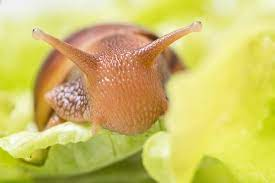

Питомцы случаютя разные и такие неожиданные
Встреча
Осенним питерским ночером возвращалась я домой, где у входной двери меня ждала ОНА. Я даже не сразу поняла, что это: маленькое, ползает, осколки панцыря на полу. В общем, после неудачных попыток найти хозяина, хозяйкой стала я сама.
Пока это чудо приходило в себя, я лихорадочно искала информацию что с ЭТИМ делать, как кормить, да как вообще дальше жить вместе!?
Вначале оказала первую помощь - склеила панцырь медицинским клеем БФ, а затем обеспечила чуду домик и пищу. Оказалось,
ничего сложного нет, особенно с интернетом под рукой).

Африканская улитка Ахатина
Очень любит
- листья салата, овощи
- панцырь каракатицы(сепия)
- Мел и кальциевую смесь
Нельзя давать
- Соленое
- Кислое
- Острое